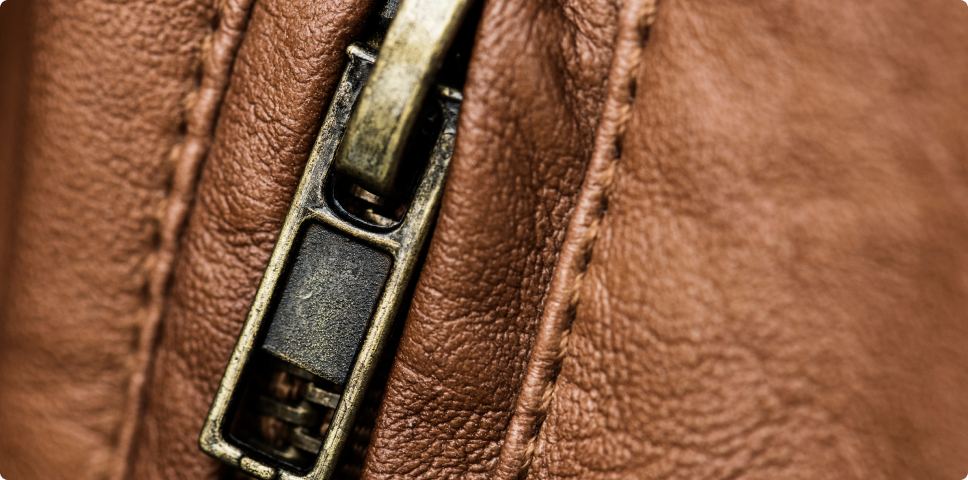

Сладкие ароматы с удом и кожей: лучший выбор на холодный сезон
Осень в самом разгаре, а это значит, что время легких акватических и цитрусовых композиций прошло. Что же предпочесть? Насыщенные ароматы – например, в восточном стиле, с обилием пряностей, ладана, древесины, табака... Отлично носятся осенью духи с удом, кожей, и особенно если к ним добавлены сладкие акценты.
Яркие, шлейфовые, даже тяжелые парфюмы хороши в прохладном осеннем воздухе – большинству из них просто необходимы низкие температуры, свежий ветер, туман и простор. Кроме того, подобные духи могут легко согреть, окутать уютом и поднять Вам настроение. А еще ароматы с удом и кожей чудесно «играют» на кожаной и меховой одежде, добавляя образу солидности, но в то же время изящества и элегантности.
Уд: смягчая брутальность
Уд – не самый простой ингредиент в парфюмерии. Его многогранность – на руку парфюмерам, но не всегда нам, покупателям. Во многих случаях уд может шокировать неподготовленного гурмана, раскрывшись сгоревшими в костре ветками, резиновыми шинами, кирзовыми сапогами и даже запахом больницы. Да, это жесткий и брутальный ингредиент, который, впрочем, «носы» научились смягчать и подчинять. И в первую очередь с помощью добавления в композиции сладких нот – ванили, цветов, фруктов. Густое дымное, солоноватое, животное звучание уда порой и вовсе «обрезают», сводя всё к смолистой древесине и кальянному дымку. Например, в композициях Montale Oud Pashmina и Korloff Paris Royal Oud, где уд смягчен сладким кальяном и розой. В духах Mancera Aoud Vanille уд соединили со специями и ванильными десертами, а в парфюме Juliette Has A Gun Another Oud – с сочной малиной.
Кожа, в которой я живу
Кожа (или замша) кажется более понятным компонентом осенних ароматов, но это только на первый взгляд. Парфюмерам приходится приложить некоторые усилия, чтобы кожаный аккорд не стал кислить, не раскрывался грубо и прямолинейно. Не так-то просто создать действительно запоминающийся кожаный аромат, и вот тут на помощь приходят ноты аппетитных десертов, экзотических цветов, сладких специй. Таким образом кожа получает особое, можно сказать, женственное звучание, хотя в наши дни грань между мужскими и чисто женскими ароматами все больше и больше размывается. «Носы» охотно добавляют к коже жасмин (Tom Ford Ombre Leather), корицу и карамель (Une Nuit Nomade Sugar Leather), а также мед и вишню (Evody Parfums Cuir Blanc).
Духи добавляют завершающий штрих элегантности, деталь, которая тонко подчеркивает внешний вид, невидимая добавка, которая дополняет мужчину и индивидуальность женщины
Джанни Версаче
С какими еще ингредиентами смешивают аккорды кожи или замши?
- Pierre Guillaume 03 Cuir Venenum – кожаная куртка, дымок дорогих сигар, виноградное вино.
- The House of Oud Wind Heat – сладкий цветочный букет и тонкая замша.Lattafa Perfumes Ajwad
- The House of Oud Wind Heat – сладкий цветочный букет и тонкая замша.Lattafa Perfumes Ajwad
- Pink To Pink – экзотические фрукты и цветы на кожаной скатерти в стиле сразу трех популярных ароматов: Parfums de Marly Delina, Tiziana Terenzi Kirke и Thierry Mugler Angel
- Nova.Mark Buxton Dreaming with Ghosts – кожа с айвой и ванилью.Atelier Materi Cuir Nilam – сладко пахнущая роза, обитая замшей шкатулка и листья табака.Laurent Mazzone (LM Parfums)
- Arsenic Osman – замша, абрикосовый чай, ванильный пирог с начинкой из сливового джема.Lancome Oud Bouquet 2016 – шоколадные конфеты, букет роз и свежая древесная стружка.
Уд, сладости и кожа: привет, осень!
Интересных ароматов с кожей, удом и сладкими акцентами не так уж и много в мире парфюмерии. Важная деталь: духи с кожано-удовыми мотивами лучше наносить умеренно, не поливаться ими, чтобы не задушить ни себя, ни окружающих. Кожа и уд по отдельности являются достаточно громкими компонентами ароматов, а уж если парфюмеры их соединяют в одной композиции… Может получиться достаточно гремучая смесь для самых смелых – например, в случае Atelier Cologne Gold Leather. Здесь есть дымный уд и грубая кожа, сладкий сливовый ликер и горячий глинтвейн. Кстати, уд и кожу часто смешивают со сладким алкоголем: в аромате Byredo Accord Oud им выступил ежевичный ром, в духах Costume National Soul – ванильная настойка с кардамоном.
Как выбрать свой класс аромата парфюма или духов
Чем больше новинок появляется на рынке, тем сложнее остановиться на чем-то одном. Даже выбирая духи для себя, можно растеряться. Профессионалы советуют разбить задачу на этапы:
- Определить бюджет;
- Понимать, для каких задач приобретается парфюм: дневного или вечернего времени, работы или торжеств;
- Слушать запахи, пробовать тестеры;
- Остановиться на любимых нотах, определить предпочитаемое ольфакторное семейство;
- Серьезно относиться к описаниям: солидные производители описывают ароматы, указывают доминирующие ноты, стойкость, характеристики шлейфа;
- Приобретать пробники, если такая возможность есть.
В идеале неплохо иметь коллекцию, в которой будет присутствовать ненавязчивая туалетная вода для работы, летний легкий мист, несколько видов духов: для выхода в свет, романтических вечеров, неформальных мероприятий.